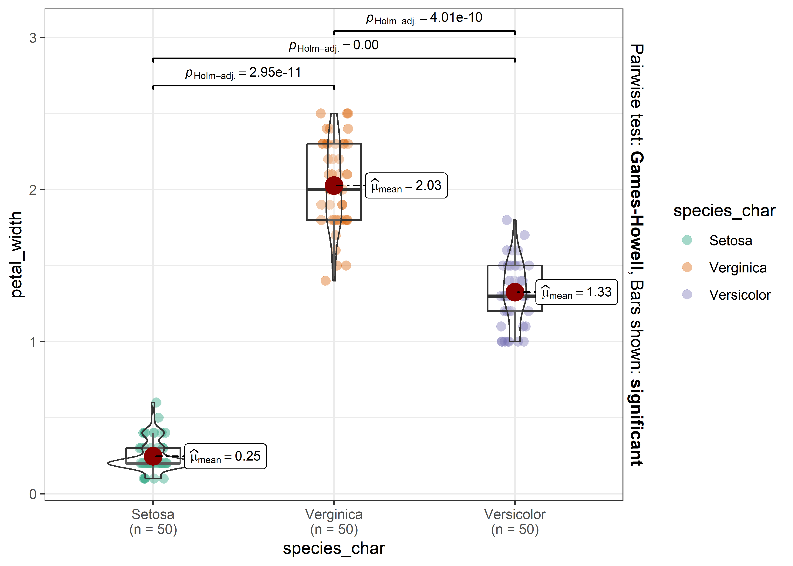

Characteristic |
Setosa, N = 50 |
Verginica, N = 50 |
Versicolor, N = 50 |
| These are the width of the petals | 0.20 (0.20 – 0.30) | 2.00 (1.80 – 2.30) | 1.30 (1.20 – 1.50) |
| These are the length of the petals | 1.50 (1.40 – 1.58) | 5.55 (5.10 – 5.88) | 4.35 (4.00 – 4.60) |
| These are the width of the sepals | 3.40 (3.20 – 3.68) | 3.00 (2.80 – 3.18) | 2.80 (2.53 – 3.00) |
| These are the length of the sepals | 5.00 (4.80 – 5.20) | 6.50 (6.23 – 6.90) | 5.90 (5.60 – 6.30) |
| This is a date column to illustrate transformations | 2022-01-01 to 2022-02-19 | 2022-04-11 to 2022-05-30 | 2022-02-20 to 2022-04-10 |
| Median (IQR); Range | |||
[TITLE]
Title page
[TITLE]
[SUBTITLE]
List of abbreviations
API - Active pharmaceutical ingredient
AIC - Akaike’s Information Criterion
BIC - Baysean Information Criterion
….
Introduction
[…] It is my report template in Quarto. It has most Rmd features and can generate .docx. Table of Contents should be wrangled after that at the moment. PDF can be generated via Word (save as..). The auto-generated .html is nice too. Computationally intensive stuff should be referenced. None of this Vignette precompile nonsense I’ve been working so hard to implement :( Computationally intensive stuff should be referenced externally.
Description of the study
[…]
Data extraction
[…]
Missing data
[…]
Examples for quick reference
Tables
Tables may be in a huxtable object for “seamless” word processing. The resulting table is ugly.
Having a custom ref. docx file, I played around with the formatting and cooked up something passable. Its not modifiable however.
| Characteristic | Setosa, N = 50 | Verginica, N = 50 | Versicolor, N = 50 |
|---|---|---|---|
| These are the width of the petals | 0.20 (0.20 – 0.30) | 2.00 (1.80 – 2.30) | 1.30 (1.20 – 1.50) |
| These are the length of the petals | 1.50 (1.40 – 1.58) | 5.55 (5.10 – 5.88) | 4.35 (4.00 – 4.60) |
| These are the width of the sepals | 3.40 (3.20 – 3.68) | 3.00 (2.80 – 3.18) | 2.80 (2.53 – 3.00) |
| These are the length of the sepals | 5.00 (4.80 – 5.20) | 6.50 (6.23 – 6.90) | 5.90 (5.60 – 6.30) |
| This is a date column to illustrate transformations | 2022-01-01 to 2022-02-19 | 2022-04-11 to 2022-05-30 | 2022-02-20 to 2022-04-10 |
| 1 Median (IQR); Range |
You will face an issue where a package outputs a “marvellously formatted” html table which would be horrible for your use case. That is a promise, but don’t know how to handle it.
| These are the width of the petals |
|||
| Predictors | Estimates | CI | p |
| (Intercept) | -0.09 | -0.20 – 0.02 | 0.109 |
| Character representation of the species: Verginica |
0.84 | 0.55 – 1.12 | <0.001 |
| Character representation of the species: Versicolor |
0.44 | 0.23 – 0.64 | <0.001 |
| These are the length of the petals |
0.23 | 0.16 – 0.30 | <0.001 |
| Observations | 150 | ||
| R2 / R2 adjusted | 0.946 / 0.944 | ||
Plots are nothing fancy.

Text outputs; prints computationally intensive output loaded at the beginning.
3.14Remarks
MD5 checksum of the database used
C:/OneDrive_DKM/-/Dinamikus Kiválóság Menedzsment - General/Stats_R/R/MartysCookbook/inst/extdata/Iris.xls “1ed4b9d5418675e017479de339aff352”
Other information regarding the document’s compilation
Analyses were conducted using the R Statistical language (version 4.3.1; R Core Team, 2023) on Windows 10 x64 (build 19045), using the packages rmarkdown (version 2.25; Allaire J et al., 2023), lubridate (version 1.9.3; Grolemund G, Wickham H, 2011), gtsummary (version 1.7.2; Sjoberg D et al., 2021), ggplot2 (version 3.4.4; Wickham H, 2016), roxygen2 (version 7.2.3; Wickham H et al., 2022), dplyr (version 1.1.3; Wickham H et al., 2023), pagedown (version 0.20; Xie Y et al., 2022) and kableExtra (version 1.3.4.9000; Zhu H, 2023).
References
- Allaire J, Xie Y, Dervieux C, McPherson J, Luraschi J, Ushey K, Atkins A, Wickham H, Cheng J, Chang W, Iannone R (2023). rmarkdown: Dynamic Documents for R. R package version 2.25, https://github.com/rstudio/rmarkdown.
- Grolemund G, Wickham H (2011). “Dates and Times Made Easy with lubridate.” Journal of Statistical Software, 40(3), 1-25. https://www.jstatsoft.org/v40/i03/.
- R Core Team (2023). R: A Language and Environment for Statistical Computing. R Foundation for Statistical Computing, Vienna, Austria. https://www.R-project.org/.
- Sjoberg D, Whiting K, Curry M, Lavery J, Larmarange J (2021). “Reproducible Summary Tables with the gtsummary Package.” The R Journal, 13, 570-580. , https://doi.org/10.32614/RJ-2021-053.
- Wickham H (2016). ggplot2: Elegant Graphics for Data Analysis. Springer-Verlag New York. ISBN 978-3-319-24277-4, https://ggplot2.tidyverse.org.
- Wickham H, Danenberg P, Csárdi G, Eugster M (2022). roxygen2: In-Line Documentation for R. R package version 7.2.3, https://CRAN.R-project.org/package=roxygen2.
- Wickham H, François R, Henry L, Müller K, Vaughan D (2023). dplyr: A Grammar of Data Manipulation. R package version 1.1.3, https://CRAN.R-project.org/package=dplyr.
- Xie Y, Lesur R, Thorne B, Tan X (2022). pagedown: Paginate the HTML Output of R Markdown with CSS for Print. R package version 0.20, https://CRAN.R-project.org/package=pagedown.
- Zhu H (2023). kableExtra: Construct Complex Table with ‘kable’ and Pipe Syntax. http://haozhu233.github.io/kableExtra/, https://github.com/haozhu233/kableExtra.
Time of compilation
2023-11-27 12:35:12.732281